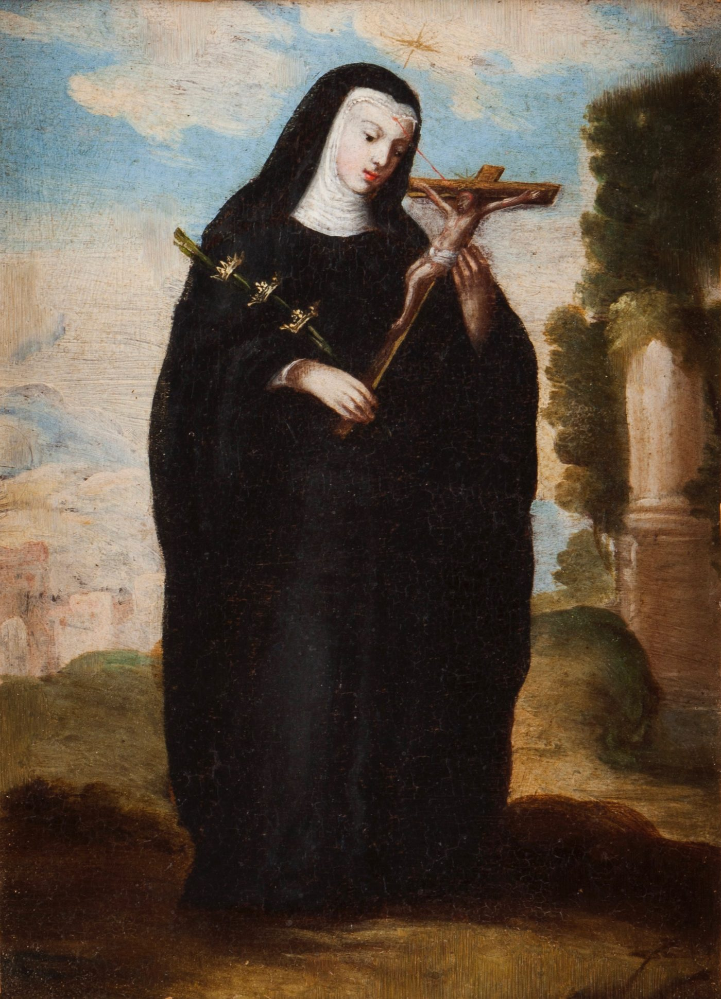

A padroeira dos casos desesperados tem uma novena guiada, simples de acessar — comece hoje mesmo, com acesso vitalício e sempre atualizado.

Acesso imediato após a confirmação · Celular, tablet ou computador
Você já rezou tantas vezes.
Já chorou pedindo, prometeu, esperou — e a resposta ainda não veio.
Talvez seja um problema de saúde que não melhora. Um casamento que dói mais do que cura. Uma dívida que não para de crescer. Uma família que parece impossível de reconciliar.
Santa Rita é chamada há séculos de padroeira das causas impossíveis — não por mágica, mas porque ela mesma atravessou o que parecia impossível: um casamento violento, a perda do marido e dos filhos, e escolheu o perdão e a fé como caminho.
Se ela atravessou isso, ela entende o que você está vivendo agora.
"A devoção a Santa Rita atravessa gerações porque ela representa a esperança em meio ao que parece sem solução. Uma novena guiada, feita com constância, é um caminho real de aproximação com Deus nos momentos mais difíceis."
"Rita viveu o impossível antes de ser santa. É por isso que tanta gente recorre a ela quando parece não ter mais saída — ela entende essa dor por experiência própria."
Você recebe o acesso na hora, direto no seu celular — sem complicação.
Orações e reflexões guiadas, ligadas à vida de Santa Rita.
Não precisa instalar nada, não precisa entender de tecnologia — é só abrir e seguir.
Uma vez comprado, é seu para sempre — sem prazo pra terminar.
Novas orações e materiais vão sendo adicionados com o tempo, sem custo extra.
Você não precisa saber "rezar certo": a estrutura já está pronta.
Do jeito mais simples que existe: você clica, recebe o acesso, e já pode começar a rezar no mesmo minuto — pra sempre.
"Rezei pedindo pelo meu casamento, num momento que eu já não via mais saída. Não sei te dizer que resolveu tudo da noite pro dia — mas eu voltei a ter paz pra continuar tentando."
"O que mais me ajudou foi ter um caminho certo pra seguir todos os dias, e foi tão fácil de acessar que eu nem precisei pedir ajuda de ninguém pra mexer."
"Comprei achando que ia ser só mais uma coisa que eu ia esquecer de usar. Mas como é simples e sempre tem coisa nova, virou parte da minha rotina."
Você não precisa carregar isso sozinha(o) por mais um dia. Comece hoje sua novena a Santa Rita de Cássia — de um jeito simples, sem complicação, com acesso vitalício — e entregue, dia após dia, aquilo que só parece impossível porque você ainda não pediu ajuda a quem sabe carregar o impossível.